声音的形状是什么呢?
如果说成长的过程中我们会遇到那些麻烦，那么与同学的矛盾与沟通必定是谁都会遇到的问题。常人尚且如此，更何况是一位无法言语也无法聆听的孩童。
声
音

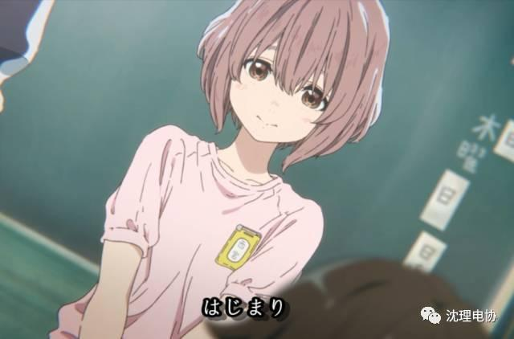
西宫硝子，一位披着粉红色短发的聋哑小学生，小学转学仪式上，硝子用手写本介绍自己的方式，明显而且深刻地告诉了班级的每一个人，我和你们，不一样。
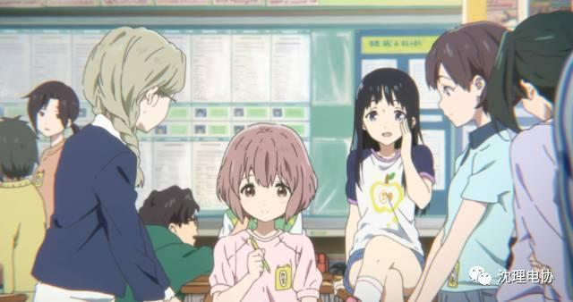
起初，或许因为新鲜，或许是因为好奇，每一位同学都对硝子热情而友善。可是耐心实在是这个世界上不可多得的品质之一。当孩子们逐渐厌烦了在写字本上反复的一笔一笔写字。硝子就开始慢慢地受到了孤立。而石田将也，一位典型的喜欢出风头，喜爱哗众取宠的孩子王。为了在无聊的校园生活中找到足够的乐子。他一开始了他的恶作剧，就是对硝子的折磨。生来就处在无声世界的硝子，将也有太多的方式可以拿她取乐了。班级上对她的欺负和霸凌也越发的升级，过分。
终于在一次将也恶劣地抢走硝子的助听器并弄伤了她的耳朵后。硝子的校园霸凌受到了校方的关注。由于受到高层的注视。此前一直无视硝子的无良班主任直接将所有责任推脱到了将也身上。而合伙欺负硝子的同班同学也纷纷甩锅。石田将也独自承担了一切责任。
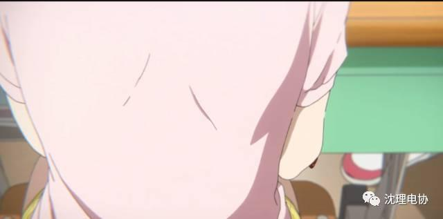
从那天起，一直扮演欺凌者的石田将也转身一变成了被欺凌者，西宫硝子曾经忍受的所有孤立与欺辱，同学们加倍的施加到了将也的身上。原本一个开朗喜爱出风头的孩子王，也变成了一个性格内向甚至不敢直视他人视线的懦弱少年。而声之形这部电影的主题也从这里开始。
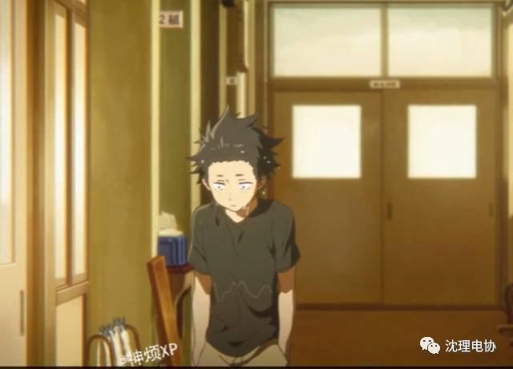
动画着重着刻画了石田将也在一系列身份转化中，他丰富的心理活动以及时光辗转流逝，已经成为国中生的将也再次遇到转学的硝子后。他或许抱着救赎，或许因为罪恶感。再一次，努力的和硝子作着沟通，希望和硝子成为朋友，希望走进硝子的内心，并且最终两人共同成长互相救赎的故事。硝子在不断长大的过程中，她无时无刻都在忍受着世界的恶意，她将对不起挂在嘴边，脸上总是有化不开的阴霾，即使因为得到了将也的关心后，她努力的想要重燃起对生活的热情，可是从她嘴里说出的每一句话，将也都听不懂。甚至，就连她鼓足了所有勇气才说出的喜欢两个字，也被将也听成了月亮。
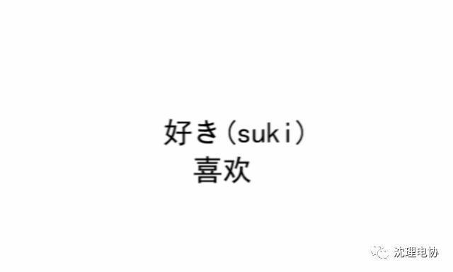
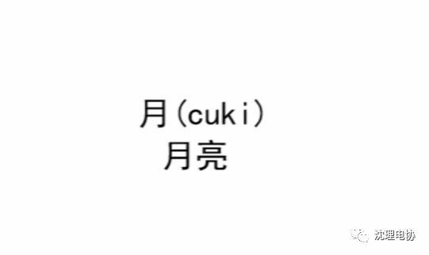
或许对将也来说，他错过的既是一个美少女的表白，同时也错过了一位卑微少女对这个世界努力的呐喊。
将也好不容易才重新建立起来的人际关系，随着旧友们再一次的聚首在一块，少男少女们纤细的内心拼盘如同玻璃一样满是裂痕。努力的告白无法传达，喜爱的男生为自己辛苦建立的人际关系也一瞬间分崩离析。西宫硝子如是问道将也，是不是只要和我在一起，就会让你变得不幸。终于，在硝子18岁那年的烟火大会上，西宫硝子，默默地独自回到了空无一人的家中，面对漫天绚烂的烟火光芒，她选择结束自己的生命。可是，也许是命运与时间交织的分叉口，亦或是导演对主题的刻画与安排。曾经撕下了所有日历，准备投河自尽却因为碰到了硝子而被救赎再次苟活下去的将也。这一次，轮到了他来拯救硝子，命运的齿轮下，将也拉住了硝子那纤细的手臂，像是告白又像是生气的一番教训之后，硝子又燃起生的希望，用手抓住了护栏。可是，耗尽了力气的将也却因此从高楼跌落。
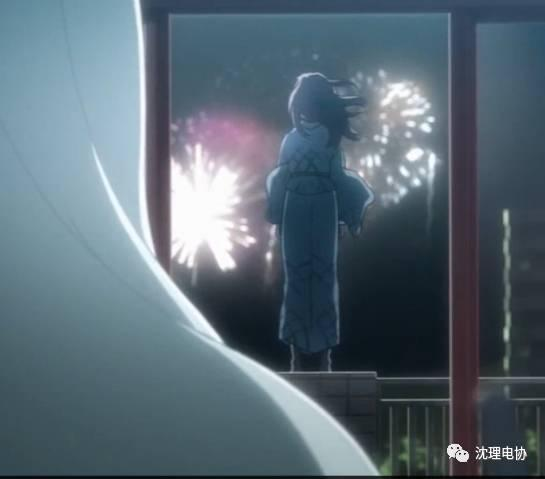
声音的形状是什么样子呢？硝子在梦里反复的问着这样一个问题，她越来越差的听力无法告诉她这个问题的答案。可是那个现在站在她身边为她做出了一切的瘦弱背影却让她知道，声音的形状是什么不再重要。重要的是，爱的温度是如此的温暖。
好运的将也因为及时送至医院救治，虽然付出了一笔昂贵的医疗费，却保住了性命。而他的事迹传到学校后，同学们也对他改观。再加上将也在病床上那会，已经下定了决心的硝子。这次，她主动联系上了曾经的旧友。最后在她的努力地沟通下，大家纷纷从过去的悲剧中释怀。开始尝试着相互理解，互相成长。最后的最后，在一片一片的欢声笑语中，已经康复的将也牵着硝子的手，找回了曾经的那些挚友，然后大家一起走在了热闹的校园祭里。而这一次，将也他抬起了自己的头。视线，没有遮掩的看着每一个人。
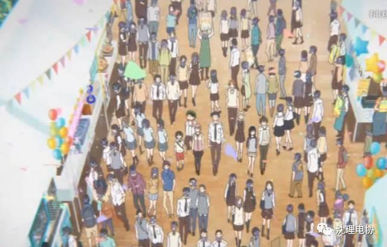
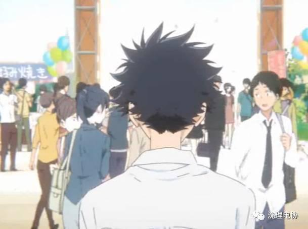
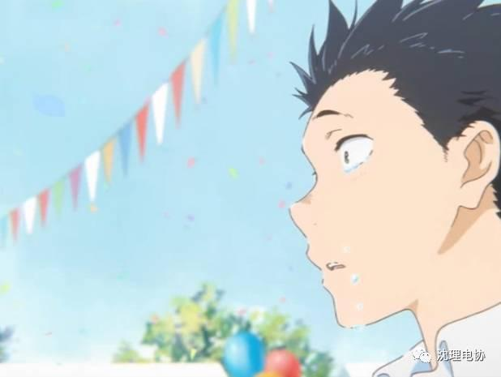
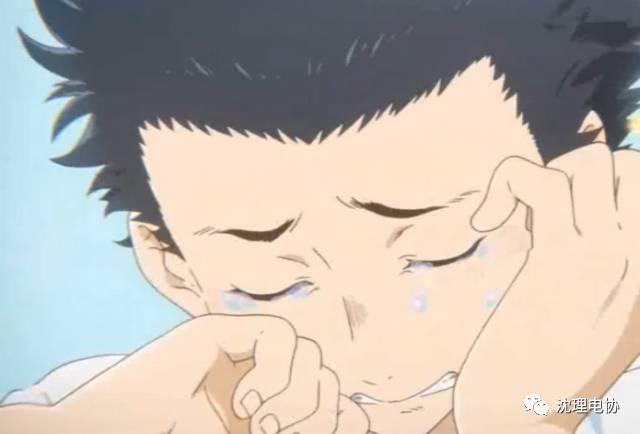
有时，人与人之间的沟通理解，是世界上最难的问题。

编辑：康宁
图文来自B站 up主神烦的视频